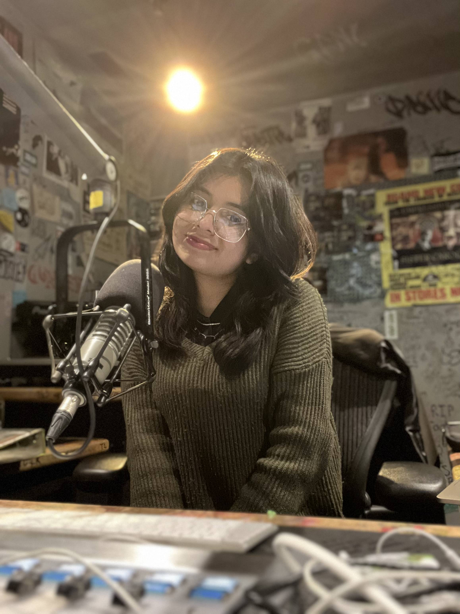

Intro
Nancy Rico-Mineros is an audio engineer, producer, songwriter, and researcher based from New York. Nancy is currently a second-year masters student at the Center for Computer Research in Music & Acoustics (CCRMA). Her research lies on Music Technology cirrciulum development, ethics of AI within the music industry, and pretty much all things related to audio. Nancy is currently a researcher of the ChucK Programming Language, where she serves as the Deputy Secretary of the Department of Education. Nancy currently works at CCRMA as a student assistant, where she currently working on the documentation and archival of CCRMA's history. Nancy is also doing some really cool archeoacoustic modeling stuff as well.
Nancy holds a Bachlor of Music from New York University, where she majored in Music Technology. While at NYU, Nancy specialized in recording, immersive audio, and music information retrieval, where she was advised by Professor Paul Geluso and Dr.Brian McFee. Outside of the classroom, Nancy was involved with various women-gender expansive non-profit organizations including She Is The Music, We Are Moving the Needle, and Girls Who Listen. Nancy's commitment in helping shape the next generation of audio engineers included serving as a student assistant for NYU’s Summer Institute for Music Production Technology.
Nancy’s dedication for research led her to take part as a student researcher at NYU’s Music and Audio Research Lab under the direction of Dr. Brian McFee. Through the research and guidance of Dr. Brian McFee led her to discover a love for digital signal processing. P rofessionally, Nancy interned at various recording studios including NYU’s James L. Dolan Recording Studio and Zelig Music under Sony Music Entertainment. From 2022 - 2024 Nancy served as the Engineering Director at WNYU 89.1 FM, where she led over 75 in-studio performances. In 2024, Nancy was selected as the music technology student representative to speak on behalf of the student body at NYU Steinhardt partnership with Sony to help create the Sony Audio Institute.
Education
- Stanford University — M.A. in Music, Science & Technology · March 2027
- New York University — B.M. in Music Technology · May 2024
Awards
- 2025| Genelec Mike Chafee Audio Visionary Scholarship
- 2025| We Are Moving the Needle Brandi Carlile Scholarship
- 2024| NYU Oustanding Leadership in Music Technology
- 2022| Stanford University CCRMA Deep Learning in MIR Scholarship
- 2022| Music Forward Foundation x Live Nation Tiffany Greene Operator Scholarship
- 2021| Eickhhoff's Supermarket Merit Scholarship
- 2021| We Are Moving the Needle x She Knows Tech Summer Series Scholarship
- 2020| Wilt Chamberlain Memorial Fund
- 2020| NYU Steinhardt Scholarship
- 2020| Horatio Alger State Scholar
Press
- 2025| Genelec Announces 2025 AES Educational Foundation Scholarship Recipients
- 2025| NYU Alumni in Action
- 2023| Nancy Rico-Mineros Takes Music Technology by Storm
- 2022| Nancy Rico-Mineros on CBS Evening News
- 2022| Live Nation-and Music Forward Foundation Announce Recipients of 2022 Scholarship Award